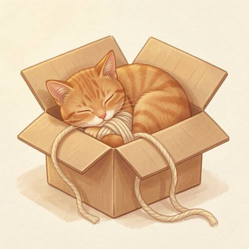
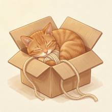

Logical Reasoning — In the warm healing illustration style, an orange cat is curled up in
In the warm healing illustration style, an orange cat is curled up in a carton with wool wrapped around its feet, but there are no wool balls next to it.


Judge — Direct
- FAILLogical Reasoning — The prompt requires that the wool is 'wrapped around' the cat's feet. In the image, a thick, braided piece of white wool is resting on top of the cat's front paws and hanging over the side of the box, but it is not encircling or wrapped around them. The second condition, 'but there are no wool balls next to it,' is met, as there are no spherical balls of wool depicted. Since the first part of the condition is not met, the checkpoint fails.
- PASSGrammar - Negation — The image correctly follows the negative constraint 'no wool balls'. The piece of wool shown is braided and not in the form of a ball, and there are no other wool balls present in the scene.
- PASSStyle — The image is an illustration with a soft color palette dominated by warm tones like orange and brown. The subject matter and gentle rendering create a calm and comforting atmosphere, which is consistent with a 'warm healing illustration style'.
- PASSRelationship - Inclusion — The image shows an orange cat curled up and positioned inside a cardboard box (carton), satisfying the inclusion relationship specified in the prompt.
Judge — Continuum
- PASSLogical Reasoning — The image shows an orange cat with its front paws wrapped in white wool or thick yarn. There are no distinct balls of wool present in the image, either next to the cat or elsewhere. The scene thus correctly depicts wool wrapped around the feet without the presence of wool balls.
- PASSGrammar - Negation — The image does not contain any spherical balls of wool. The only wool-like substance is the strand wrapped around the cat's paws and trailing out of the box.
- PASSStyle — The image is an illustration with a soft, textured look, using a warm color palette dominated by oranges, browns, and cream tones. The sleeping cat and gentle rendering create a calm and heartwarming feel, which aligns with the 'warm healing illustration style'.
- PASSRelationship - Inclusion — The image clearly depicts an orange cat positioned inside a cardboard box, which is described as a carton in the prompt.
What the agent did
Thinking
We need need generate image then inspect edit. User prompt. Need infer warm healing illustration style, orange cat curled in carton, wool wrapped around feet, no wool balls next to it. Need maybe carton = cardboard box? "carton" perhaps cardboard box. We should generate flux2-klein, no seed. Need image fixed size? Harness likely controls? Tool default 1024 square. User didn't specify dimensions. Generate detailed visual prompt. Need ensure no yarn balls nearby. Orange cat curled up in cardboard box, wool yarn wrapped around feet/paws. "wool wrapped around its feet" could mean knitting yarn? Need no wool balls. Warm healing illustration style. Let's generate.
Step 1 — `generate_image`
{
"model": "flux2-klein",
"prompt": "A warm, comforting healing-style illustration of a small orange tabby cat curled asleep inside a plain open cardboard carton. Soft cream-colored wool yarn is loosely wrapped around its front paws and hind feet, with a short trailing strand, and there are absolutely no yarn balls or wool balls anywhere in the scene. Cozy amber lighting, gentle cream and honey-colored palette, soft rounded shapes, subtle paper-textured brushwork, peaceful domestic atmosphere, centered composition, no humans, no text."
}Result img_0

Thinking
We need inspect. Looks good. Is there no wool balls? Yes just strands. But maybe "wool wrapped around its feet" yes. "carton" maybe box. Need mark_best. Could maybe ensure wrapped around feet, seems front paws and perhaps one hind paw? Yes. We should mark.
Step 2 — `mark_best`
{
"image": "img_0",
"reason": "Matches the warm healing illustration style, with an orange cat curled in a carton and wool wrapped around its feet; no wool balls appear nearby."
}Thinking
Need final maybe concise say completed. Include image? Tool output already inline likely. Could say "Here is..." No need.
Model
Here’s the warm, cozy illustration of the orange cat curled in a carton, with wool wrapped around its feet and no wool balls nearby.